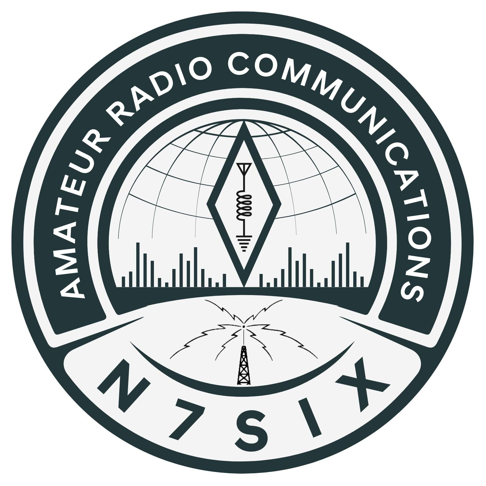

Who I Am
Sean is a licensed amateur radio operator with a developer's mindset, bridging communications technology and software contribution.

Sean N7SIXLicensed Amateur Radio Operator | Philippines
Known on the air as N7SIX, Sean contributes to the UV-K series firmware ecosystem while working professionally in the automotive industry. This site presents a focused profile shaped by RF curiosity, embedded problem-solving, and production-minded work.
Profile
Who I Am
Sean is a licensed amateur radio operator with a developer's mindset, bridging communications technology and software contribution.
Where I Work
His professional background in the automotive industry informs a direct, quality-driven approach to systems, diagnostics, and execution.
What I Build
From firmware contribution to RF-centered experimentation, his work is focused on tools and platforms that need to be dependable in real use.
Focus Areas
Sean's profile sits at the intersection of communications, embedded software, and applied industry work. The result is a practical technical perspective that values clean execution over noise.
Experience in radio encourages discipline around clarity, redundancy, signal awareness, and dependable communication under real-world constraints.
Contribution to the UV-K series firmware aligns with a technical interest in improving capability, usability, and performance for radio users.
Automotive work reinforces a methodical approach to systems that must balance precision, diagnostics, and day-to-day operational demands.
Signal Log
The radio side of this profile informs the software side: operator needs, hardware limits, and direct experience all shape how useful tools and firmware should behave.
Contact
Personal profile for a licensed amateur radio operator in the Philippines, UV-K firmware contributor, and automotive industry professional.
Name: Sean
Callsign: N7SIX
Location: Philippines
Focus: Amateur Radio, Firmware, Automotive